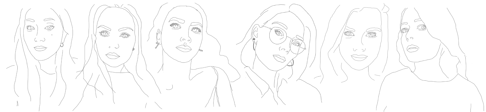
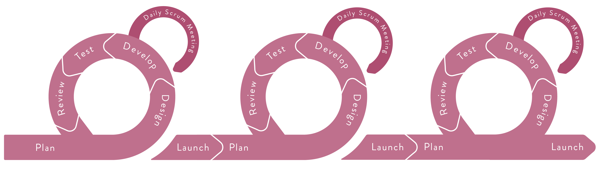
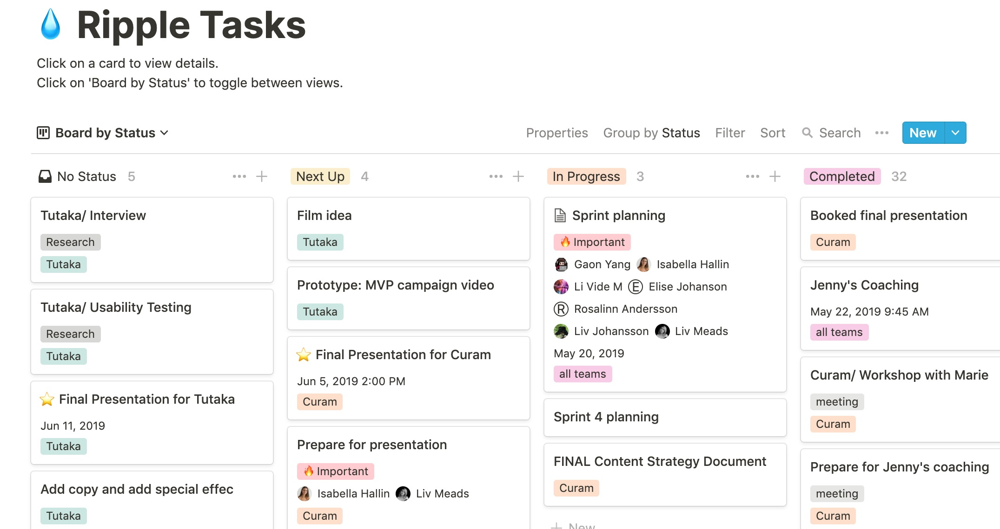
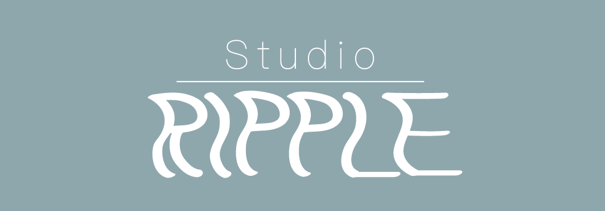

Background
The core of this project was to explore what it means to run a company from a day-to-day perspective, including: management, organisation, culture, finance and clients.
Our team started off with a workshop to come up with the company’s core values, vision and mission.
“We design with purpose and work towards the notion that a single action can create an impact of ripples.”
“We work according to our values, we use empathy to dig deep and get a better understanding. Action is when we test and learn the effects, to then design the impact we want to create.”
The Process
To create an effective team collaboration, both self-organising and cross-functional, to lead a productive process and evaluate our development, I introduced our team to the Scrum framework.
The framework is based on continuous learning and constant improvements throughout the process. It’s structured by an overarching vision, our briefs and debriefs, with a dynamic product backlog enabling changes and adjustments. We divided the project into several sprints with their own backlog. During the sprints we had daily stand up meetings which included the team members going through what one did the day before, what one will do today and if there are any obstacles to get it done. At the end of the sprint we took time for review, going through goals, and retrospective, assessing the goals.
The digital tool Notion was used as a workspace to structure the project: write our backlogs, plan our sprints and schedule team meetings.
Branding
I created the brand identity and the visual design, which included the logo, colors and fonts. My skeleton to start visualising the body of company based on our team’s core values, vision and mission.
I, together with the copywriter in our team, came up with the name of the studio: Studio Ripple, on the notion that a single action can create an impact of ripples.
The Logo
The logo represents the ripple effect in motion. I wanted this to be reflected in name as well, so I created a font with a smooth movement. The ripple effect of something being dropped in water was my outset for deciding the color palette. The colours represent different shades of the sea and the accent colours are shades of the sunset reflected in the water.
Result
A design studio with a brandbook, business concept and working methods. Our studio worked with two clients with one brief each.
What was successful? That transparency and close communication with the client is key to nail the brief. Also, the importance of constructive feedback, appreciate each other’s work and celebrate throughout the process.
What could’ve been done differently? I’d want to create and present a simplified logo that could be cut from paper.